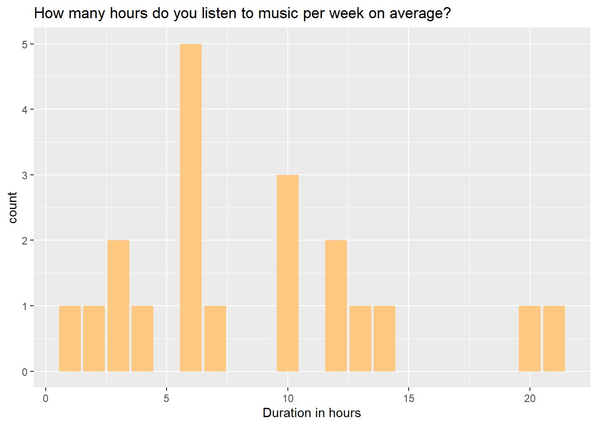

Assignment 2
STATS 220 Semester One 2022
Pok Man Chung
2022-04-03
Introduction
Nowadays, it is quite convenient for people to access music thanks to technology advancement. Several online streaming platforms have started providing music services to their users since 2000s.
As a result, I want to investigate whether some older technologies including Vinyls, cassettes and TV programmes have become obsolete or not, and which will be the most popular way for people to access music. Besides, I would like to explorer whether their most preferred way of listening to music can provide them with sufficient music resources.
Furthermore, for habits perspective, I would like to know the duration for people to listen to music.
Links to form and data
Analytics
Below is the first 5 row of the data frame.
| time | gender | age | likeness | average_duration | preferred_way | used_way | genre | sufficient_resource |
|---|---|---|---|---|---|---|---|---|
| 03/04/2022 13:36:04 | Male | 21 | Yes | 4 | Online streaming platforms | Online streaming platforms | Classical, Pop, Rock ’n Roll | Yes |
| 03/04/2022 13:37:03 | Male | 27 | Yes | 6 | Compact Discs (CD) | Compact Discs (CD), Online streaming platforms | Folk, Pop | Yes |
| 03/04/2022 13:40:19 | Male | 19 | Yes | 10 | Online streaming platforms | Radio programmes, Online streaming platforms, Television programmes | Heavy metal, Pop, Rock ’n Roll | Yes |
| 03/04/2022 13:40:25 | Female | 23 | Yes | 13 | Online streaming platforms | Online streaming platforms | Pop, Rock ’n Roll | Yes |
| 03/04/2022 13:41:09 | Female | 62 | Yes | 14 | Radio programmes | Live music performance, Radio programmes | Folk | Yes |
Results
The total number of respondents in this study is 20
.
In this study, there are 7 female and 13 male respondents.

In this study, 18 of the respondents are aged between 18 and 29. There are 2 respondents at their 60s.
19 out of 20 respondents like to listen to music at their spare time and only 1 of them does not.

The number of hours that our respondents listening to music per week on average ranged between 1 to 21, with a mean of approximately 8.6 hours.
We found that online streaming platforms is the highest most preferred way for people to listen to music and there are 12 people who chose this option, which accounts for 60% of all respondents. The 2nd highest most preferred way is television programmes, and there are 3 respondents who chose this option. None of the options get 0 counts.
We found that 15 of our respondents used online streaming platforms to listen to music in previous month, which accounts for 75% of the whole sample. It is followed by television programmes, radio programmes and Compact Discs, with 6 (30%), 4 (20%) and 3 (15%) counts respectively.
The most popular music genre that the respondents like to listen to is Pop, which has 12 counts in total. After that, both Folk and Classical are the second highest, each of which consist of 7 counts. Punk is the least popular music genre among our respondents, there is only 1 count in total.
13 of our respondents believe that their most preferred way of accessing music can provide them with sufficient resources of their favourite music genres. 7 of the respondents disagree that they are able to find sufficient resources of the genres they love.
Comments
From this study, I found that a very high percentage (95%) of respondents would like to listen to music during their spare time. However, the average weekly listening hours of the respondents is only 8.6 hours. It shows that our respondents spend less than half and an hour per day on average on music listening per day. However, we do notice that there are people who spend 20 hours per week on music.
Online streaming platform has become the dominant way for people to listen to music, in terms of both preference and the actual way that our respondents adopted. As mentioned above, 75% of our respondents chose it to be their most preferred way. However, we still need to conduct further studies to investigate the reasons behind that.
Nevertheless, the is still a number of respondents who use television, radio and CDs to listen to music. 1 of our respondents is still using Vinyl to listen to music, which shows that older technologies have not been phased out completely, though their popularity are much lower than that of online steaming platforms.
Regarding genre, we figure out that pop, folk and classical are the top 3 most popular music genre for the respondents. However, more than a third of our respondents believe that they cannot find enough resources of the music genres they love in their most preferred way of accessing music.
However, due to the sample size limitation and the way that we chose the sample, many of our respondents are at their 20s. It means that our data cannot fully reflect the real music preferences and habits of people around the world. we should conduct more studies to further investigate this topic.
Learning reflection
After having lessons on Module 2, I understand we need to pay extra attention to design the survey form. It is because even dynamic reporting system can help us to obtain up-to-date data and allow us to generate result instantly with the help of codes, if our form is poorly designed, we still need to spend a lot of time in data cleaning, meaning that we cannot enjoy the advantages brought by the dynamic reporting system.
Besides, I found that regex is a great tool, especially in dealing with numerical data. With the help of regex, I did not need to do data cleaning before analysing the data in R.
In this Assignment, I have reused two techniques that I learnt in Assignment 1. Firstly, I introduced some css codes here to change the font and colour of this report. This time, I chose orange to be the theme colour, aiming to bring the feeling of warmth to readers. Secondly, I used bold and italic formatting in the Analytics section to highlight some important values and figures.
Now, I am quite curious about machine learning. In today’s world, we know that the sizes of data are getting bigger and bigger. Without the aid of machine learning technology, we might need to spend a lot of time in order to analyse the data and make appropriate predictions. But with machine learning technology, we can spend limited amount of time to train the machine. After that, the machine can produce results in a very short period of time even with different new input. Therefore, I believe that machine learning technology is worth to learn and discover, as it can improve both efficiency and effectiveness if we make good use of it.
Last update
3/4/2022